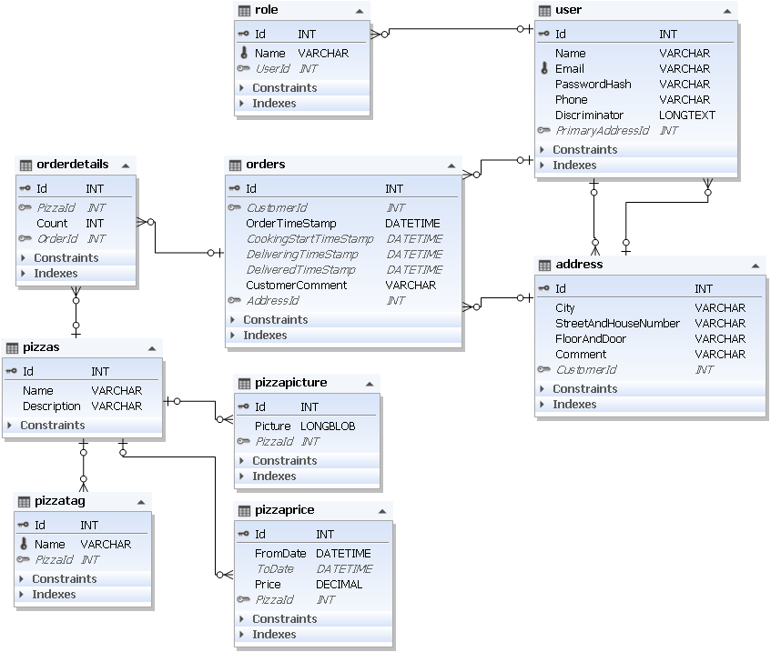
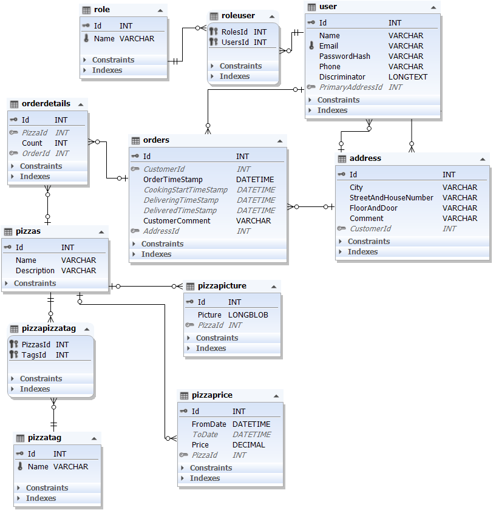

Az eddigiek során talán nem derült ki mi a szerepe a pizzeria.service projektnek. Ez most fog szerepet kapni: az adatbázis műveletek végrehajtásáért lesz felelős. Joggal merülhet fel a kérdés, hogy miért nem a pizzeria.data projektbe került ez a funkció. Azért nem, mert ennek a funkciónak egy külön projektbe történő kiszervezésével lehetőség nyílik különböző adatbázisokhoz történő csatlakozás. Ebben a projektben az adatbázis MySql (pontosabban MariaDb) lesz, azonban ha valamilyen oknál fogva egy NoSql adatbázist kellene csatolni, akkor elég lesz csak a szerviz projektet módosítani, vagy kicserélni.
A Létrehozáskor három különálló projekt készült el, a további lépések előtt meg kell határozni ezek között a függőségi viszonyokat. A pizzeria.service projektnek el kell érnie a pizzeria.data projekt elemeit, míg a pizzeria.website-nak mindkét másik projektben definiált osztályokkal, interface-ekkel dolgoznia kell majd.
A modellosztályok létrehozása a pizzeria.data projektben elkészített interface-ek alapján törénik. Az így létrehozott osztályok segítségével fogja az Entity Framework az adatbázist létrehozni. Ezt a módszert szokás Code first-nek hívni, hiszen egy programkód alapján fog az adatbázis létrejönni. Ez azonban nem jelenti azt, hogy az adatbáziskezeléssel kapcsolatos ismeretekre ezután nem lesz szükség.
Az alábbi videóban az Address modellosztály létrehozása látható, a többi osztály létrehozása is hasonlóképpen történik.
A Visual Studio-val készült videón látható kódkiegészítést a VS 2022-höz telepített Visual Studio IntelliCode bővítmény végzi. További részletek: https://visualstudio.microsoft.com/services/intellicode/
A modellosztályok létrehozása során belefutottam egy problémába: az IUser interface-ben a szerepek definiálása így nézett ki:
public interface IUser : IEntity
{
...
IEnumerable Roles { get; set; }
} Abban az esetben, ha a modellosztályban módosítottam a Roles jellemző típusát IEnumerable<IRole>-ról IEnumerable<Role>-ra, akkor jött a hibaüzenet, hogy így az osztály már nem illeszkedik az interface-re. Ilyenkor jön a "legjobb barátom" (a Google keresője) és a programozási kérdéskben a leggyakrabban segítséggel szolgáló oldalon találtam megoldást a: Stackoverflow-n. Az alábbi videón ennek a problémának a megoldását rögzítettem.
Az elkészült osztályok forráskódjai az alábbi táblázatban találhatók. (Az utolsó két osztályra azért volt szükség, mert később kiderült, hogy az Entity Framework a bájt tömböt, mint önálló típust, valamint a Dictionary-t nem tudja lekezelni)
A MySql adatbázis létrehozásához Entity Framework-ot használok, amihez szükség van néhány Nuget package telepítésére. Ezeket csomagokat a pizzeria.service projekthez adom hozzá. A Nuget csomagokon kívül létre kell hozni egy a DbContext osztályból származó saját osztályt, ami tulajdonképpen az adatbázist fogja reprezentálni a programban.
A következő lépés az adatbázis tényleges létrehozása:
Nézzük meg közelebbről az így létrejött adatbázist:

Van vele egy kis gond: egy pizzához csak tag-et lehet rendelni, azaz a két tábla közötti kapcsolat jelenleg 1:N, miközben N:M kapcsolatra lenne szükség. Ennek a megoldása viszonylag egyszerű: szükség van egy újabb jellemzőre a PizzaTag osztályban: Pizzas.
A javítás és az adatbázis ismételt létrehozása videón:
A kész(nek tűnő) adatbázisról egy diagram:
